This is the last question from the Google Codejam 2017 qualification round.
How can we place models
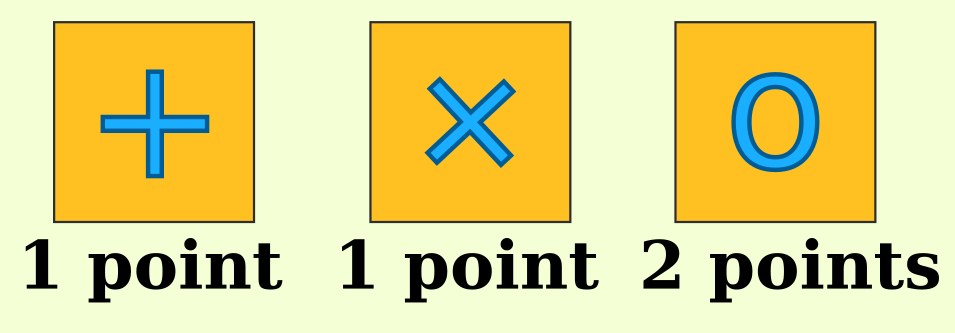
on the square stage
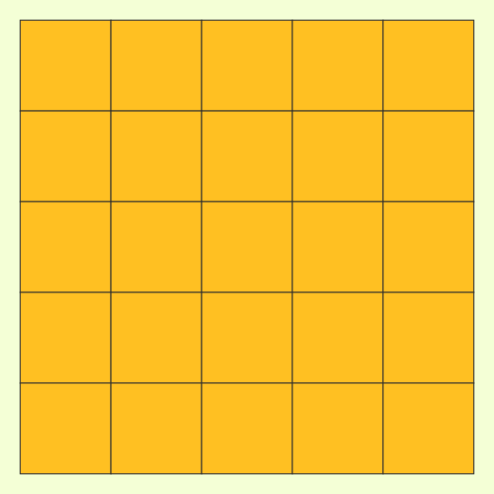
to get as many points as possible? The rules are
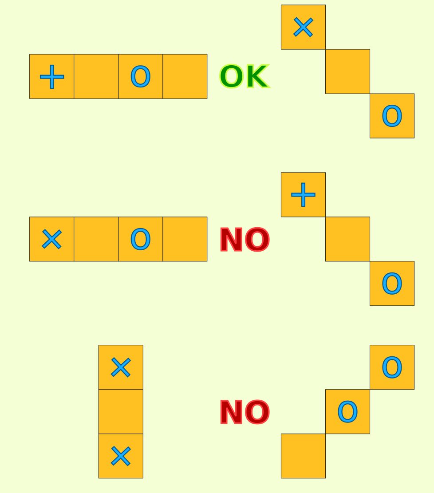
Some models are already placed.
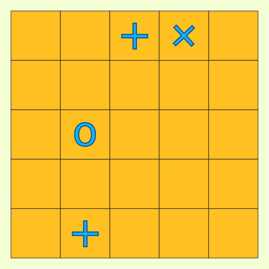
We can only change a + or X to an O or place new models on the stage.
From the rules, all rows look like this
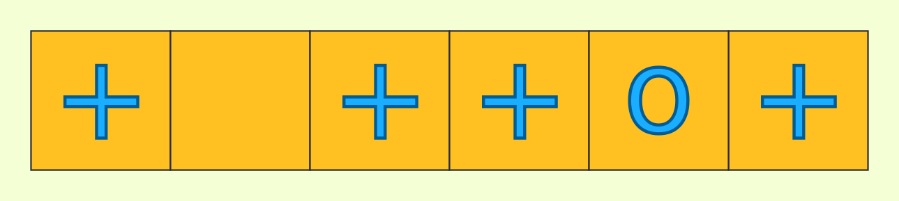
where at most one model is not a +. Let's just record where the non-+s are
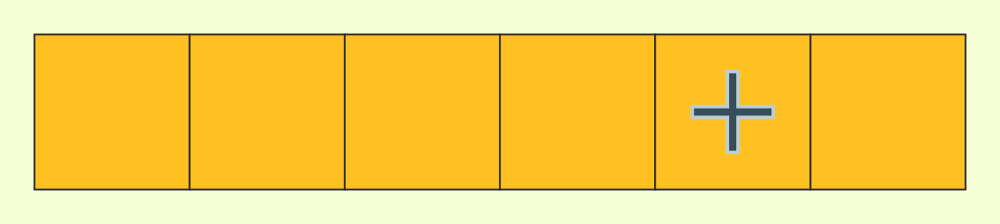
The rule is now: at most one non-+ per row and column.
So we can convert a grid (stage) into one grid of non-+ and one grid of non-x.
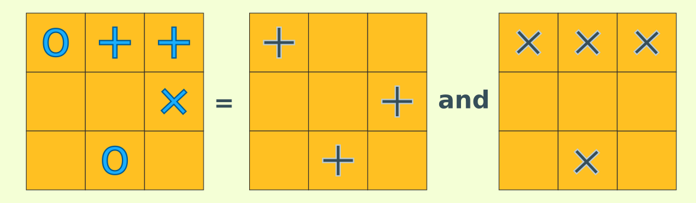
using these rules
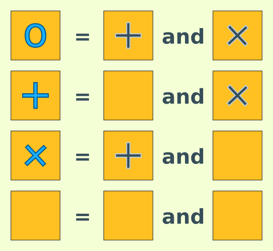
and the points match up if each non-+ and non-x is worth 1 style point.
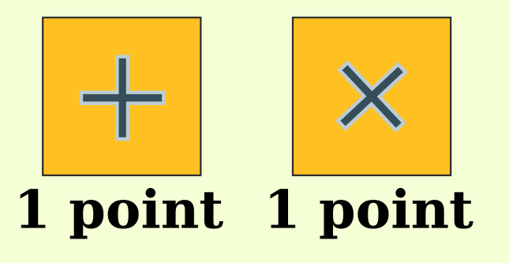
The already placed models translate to already placed non-+ and non-x.
This lets us place non-+s and non-xs separately.
non-+ is the easier of the two. A preplaced non-+ means we can't put more non-+ in that row or column
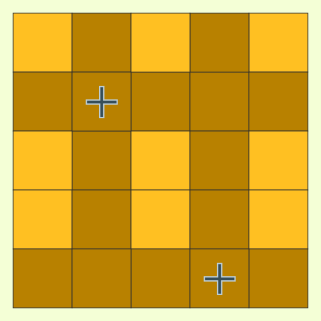
so we might as well remove them and get a smaller square. How can we place as many non-+ as possible?
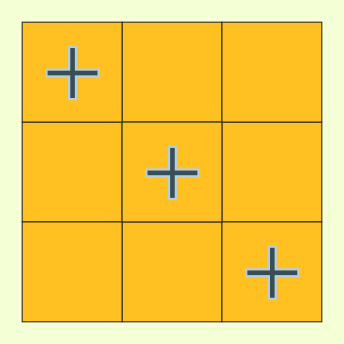
Along the diagonal is one way. This places as many non-+ as we have rows (or columns) so we can't do better.
non-x placement is
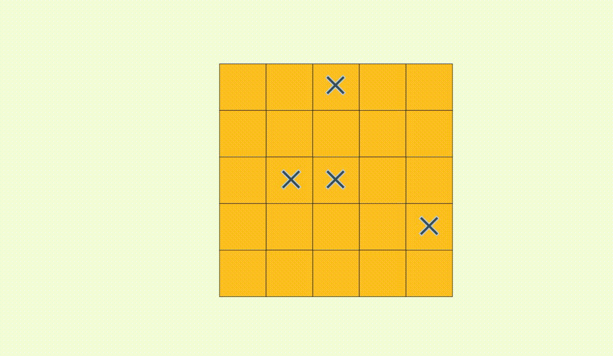
non-+ placement rotated by 45 degrees. But now the stage isn't a square anymore. How can be place a maximum number of non-+ here?
This looks like some kind of set packing where the squares are the elements and the rows and columns are the subsets. Since each square appears in exactly two subsets,
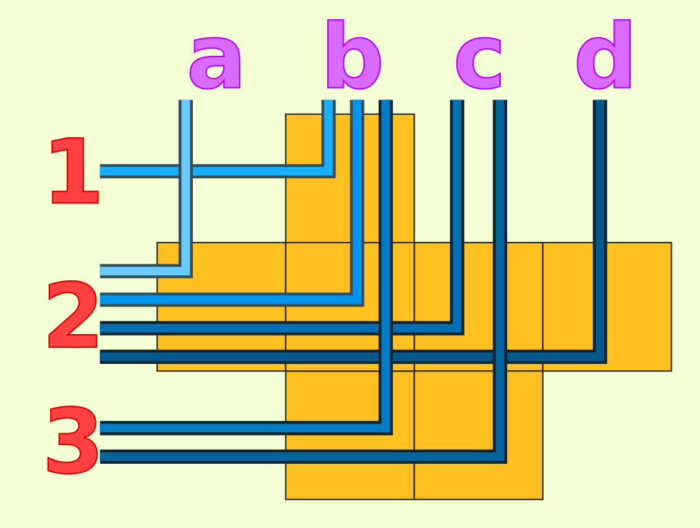
set packing here is actually maximum bipartite matching and we can use any of the existing algorithm for that.
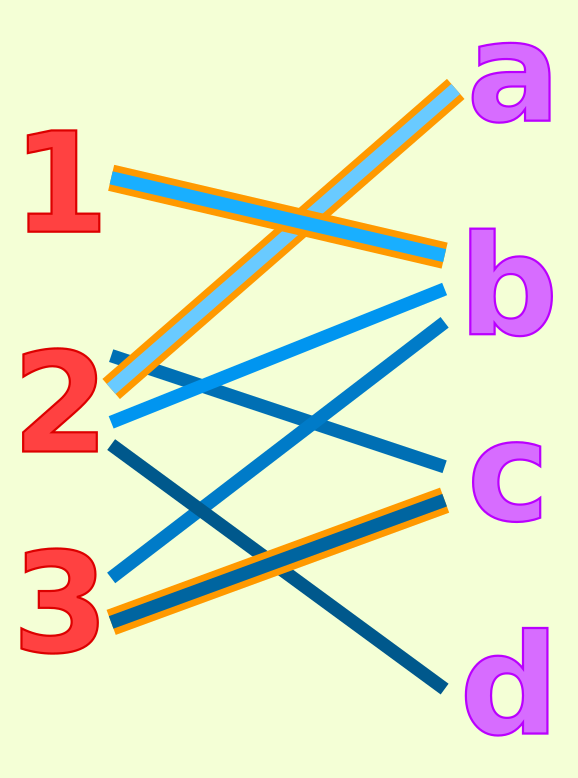